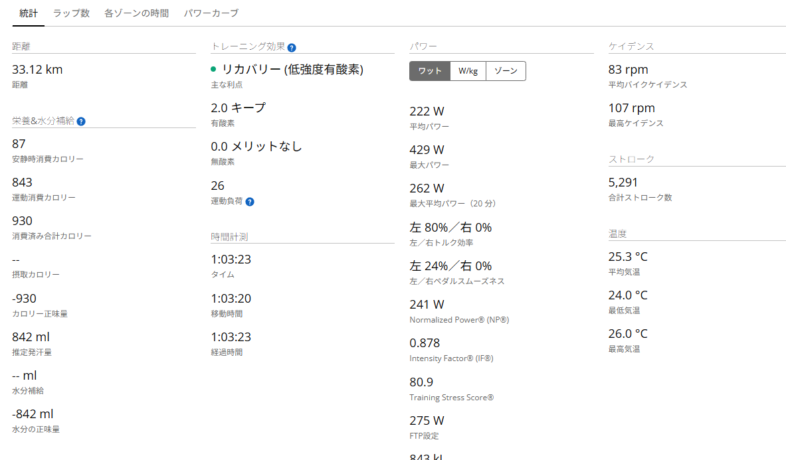
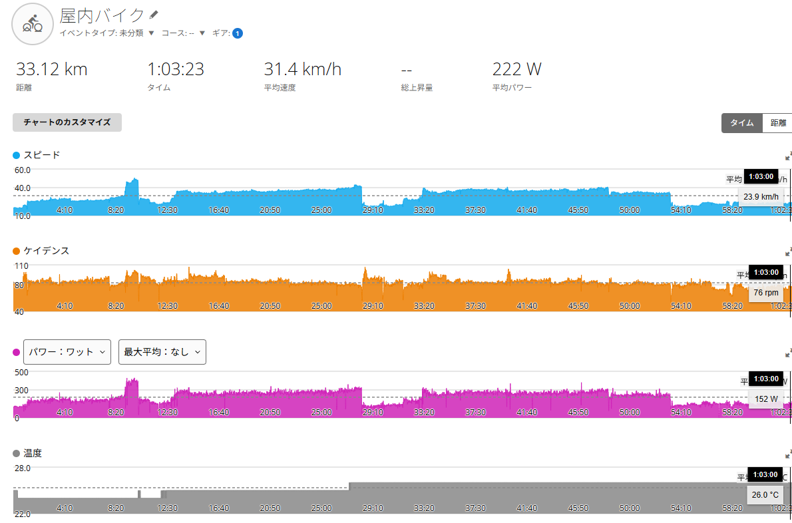

15分260W×2の予定が、なぜか270W×2になったローラー練習
昨日20分285Wでえづいた人間が、翌日にまたローラーへ乗った。普通は休む。だが、普通ではブログが進まない。

今日の目的
昨日はローラーで20分走をやった。20分平均285W。15分までは290W前後で踏めたが、残り5分で地獄を見た。内臓もメンタルも動員するタイプの練習である。
普通に考えれば、翌日は軽く流すか休む。少なくとも、昨日えづいた人間が翌日にまた高めの出力で踏む必要はない。
しかし自転車乗りは、そこでこう考える。「昨日あれだけやった翌日に、どれくらい踏めるんだろう」。終わっている。発想がもうだいぶ終わっている。
でも、この終わっている好奇心があるから、練習は少し面白くなる。今回は、20分走の翌日に15分走×2を行い、疲労が残った状態でどれくらい再現できるかを見た。
予定は260W×2だった
当初の予定は、かなりシンプルだった。15分260Wを2本。1本目は抑えめ。2本目は調子が良ければ少し上げる。限界テストではなく、富士ヒル向けの持久力強化である。
AIからも、「昨日20分285Wをやっているので、今日は再びFTPテスト化しない方がいい」「260W前後を2本そろえるのが目的」「2本目で280W以上まで上げ続けるのは不要」という、非常にまともな提案が来ていた。
なるほど。たしかに正しい。昨日あれだけ苦しんだのだから、今日はきれいに15分を2本そろえる。変な一発芸ではなく、再現性のある持久力を作る。非常にまともである。
ただし、私には私の方針もある。行ける日はできるだけ限界に近づける。その代わり、休む日はしっかり休む。翌日にFTPテストなど大事なメニューがある時は整える。今日は、そのメリハリ型の方針がどう出るかの実験でもあった。
今日の主なデータ
- 最大パワー429W
- 20分最大平均パワー262W
- FTP設定275W
- 運動量843kJ
- 平均ケイデンス83rpm
- 推定発汗量842ml
まず目につくのはTSS80.9。これはもう軽くない。Garmin上では今回も「リカバリー」と出たらしいが、IF0.878でTSS80.9である。リカバリーとはいったい。普通に中から高強度の持久力練習である。

ラップを見ると、予定より踏んでいた
主なラップを見ると、メインの15分走は1本目が15分270W、2本目が15分268Wだった。予定では260W×2。終わってみたら270W×2。どうしてこうなった。
- Lap415:01 / 平均270W / NP269W
- Lap615:02 / 平均268W / NP267W
- Lap75:01 / 平均243W / NP246W
こういうことがあるから、人間の「今日は抑えます」は信用できない。特に、脚が少し回っている時の「抑えます」は危険である。
ただ、数字だけ見ればかなりきれいにそろっている。しかも昨日20分走をやった翌日である。これは素直に良い材料だと思う。ただし、予定より上がっている。ここが面倒くさい。うまくいった。でも軽くはない。

成功。でも軽くはない
AIの評価はかなり分かりやすかった。15分走×2は成功。昨日20分285Wをやった翌日に、270W前後を15分×2本そろえられたのは良い。富士ヒル向けの持久力、再現性という意味でも高評価。
ただし、260W×2の予定に対して270W前後まで上がっている。FTP275W基準だと、270Wはほぼ閾値走。TSS80.9なので、今日も高負荷日として扱うべき。
要するに、成功。でも軽くはない。これはたぶん正しい。行ける日は攻めたいが、これを軽め扱いして連日続けると、さすがにどこかで疲労が積み上がる。
Lap7の5分243Wは余計だったのか
今回、AIが気づいたポイントがある。2本目の15分走が終わったあと、Lap7で5分243Wを踏んでいた。AIからすると「2本目が終わった後なのに、クールダウンにしては踏みすぎでは？」という見方になる。
言ってもいないのによく気づく。最近のAIの進化はすごい。ひと昔前は、見てもいない動画を見たと言い張って喧嘩したのに。あれはあれでいい思い出である。
話を戻すと、たしかにただのクールダウンなら243Wは高い。普通、クールダウンというのはもっと人間に優しいものである。243Wでクールダウンと言い張るのは、少し無理がある。
ただし、ここには一応意図があった。将来的に20分走へつなげるために、15分で一度落としても、その後5分踏み続けられるかを試したかった。
つまりLap7は、余計な踏み足しではない。15分走を20分走へつなげるためのテストである。もう少し正直に言えば、悪あがきである。
昨日の疲労はあったのか
正直、昨日の20分走で疲労が残っていると思っていた。20分285W。しかも15分以降はかなりきつかった。なので今日は、260W×2でも十分だろうと思っていた。
しかし実際には、270W前後で2本そろった。これは良い材料だと思う。昨日高めに踏んだ翌日でも、ある程度の出力を再現できた。少なくとも、昨日の20分走で完全に終わっていたわけではない。
ただし、ここで調子に乗ると危ない。自転車乗りは、少し調子がいいとすぐ「明日もいけるのでは」と思い始める。そしてだいたい、どこかでまとめて請求が来る。
疲労はその場で全部見えるわけではない。脚に出ることもあれば、眠気に出ることもある。気分に出ることもある。食欲に出ることもある。そして、尻に出ることもある。
お尻が負けた
練習後、お尻が擦れて痛くなった。外側が擦れてヒリヒリする感じである。富士ヒルゴールドを目指す前に、まずローラーで尻が負けた。これはなかなか厳しい現実である。
脚は270W前後を2本そろえた。心肺も耐えた。メンタルもなんとか持った。しかし、尻が負けた。強くなるためには脚だけではなく、尻の耐久力も必要らしい。
最初は「剃ってオロナインを塗ればいいかな」と思った。我ながら雑である。痛い。じゃあ剃る。そして薬を塗る。発想が短絡的すぎる。
AIからは止められた。痛い状態で剃るのはやめた方がいい、とのことだった。擦れて痛いところに剃毛すると、カミソリ負けや細かい傷、毛嚢炎の原因になりやすい。たしかにそうである。すでに負けている場所に、さらに刃物を入れる。冷静に考えるとかなり野蛮である。
- 今日やる汗を流す、ゴシゴシ洗わない、しっかり乾かす
- 薬オロナインは薄く
- 避ける締め付ける下着、痛い状態での剃毛
- 次回ワセリンやシャモアクリームを検討
脚の練習をしていたはずなのに、最後は尻のケアの話になった。これもまた、ロードバイクなのか。
仮説、実行、結果、考察
仮説は、「昨日20分285Wを行った翌日でも、260W前後の15分走を2本そろえられれば、富士ヒル向けの持久力強化になる」というものだった。ただし、疲労が残っている可能性もあるため、無理にFTPテスト化しない方がよい。
実行したのは、GT-ROLLER Q1.1での15分走×2。当初予定は260W×2。実際には1本目270W、2本目268Wになった。さらに2本目後に、20分走への橋渡しとして5分243Wを追加した。
結果として、15分走×2は成功。昨日の20分走翌日でも、270W前後を2本そろえられた。FTP275W設定後のTSSは80.9で、体感に近い負荷表示になった。一方で、お尻の擦れが出た。
考察としては、260W×2の予定に対して270W前後まで上げられたのは良い材料。ただし、これは軽めではなく、普通に高負荷の持久力練習だった。15分走後に少し落として5分踏む形は、20分走への橋渡しとして使えそうだ。
まとめ
今日は、昨日の20分走の翌日に15分走×2を行った。予定は260W×2。結果は270Wと268W。予定より少し上がったが、2本そろえられたのは良い材料だった。
ただし、IF0.878、TSS80.9。これは軽めではなく、普通に高負荷の持久力練習である。AIの評価は「成功。でも軽くはない」。非常にその通りで、腹が立つほど便利である。
2本目後の5分243Wは、20分走への橋渡しとして使えそうな感覚があった。今後は15分走の後に少し落として5分粘る形も試していきたい。
一方で、お尻の擦れも発生した。富士ヒルゴールドを目指す前に、まずローラーで尻が負けた。脚だけ鍛えてもダメらしい。尻も守らなければならない。
今日の結論。260W×2の予定だった。終わってみたら270W×2だった。そして最後に、尻が負けた。強くなる道は、思ったより泥くさい。まあ一年あるので、コツコツやっていこう。